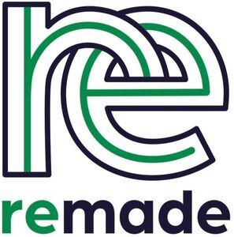

Trade Mark Journal No.2025/046 14 November 2025
WO0000001882429 (4,6,8,9,11,12,14,16,17,18,19,20,21,22,23,24,25,27,28,35,40,41,42,45)
Office of origin: European Union Intellectual Property Office (EUIPO)
Date of International Registration:1 August 2025
Date of designation in the UK:
1 August 2025

Sea green ("R=1 G=142 B=66", "C=85 M=16 Y=94 K=3", Pantone "354 U"); Cold violet ("R=48 G=26 B=74", "C=93 M=100 Y=0 K=71").
- Class 4
- Fuels and illuminants; wicks for candles; dust controlling compositions; industrial oils and greases, lubricants.
- Class 6
- Common metals and their alloys; processed metal ores; metal materials for construction; buildings, transportable, of metal; non-electric cables and wires of common metal; small items of metal hardware; containers of metal [storage, transport]; safes [metal or non-metal]; ores of metal; metal hardware; tubes of metal; railway material of metal.
- Class 8
- Hand tools and implements [hand-operated]; cutlery; side arms, other than firearms; razors.
- Class 9
- Scientific apparatus and instruments; research apparatus and instruments; nautical apparatus and instruments; surveying apparatus and instruments; photographic apparatus and instruments; cinematographic machines and apparatus; audiovisual apparatus; optical apparatus and instruments; weighing apparatus and instruments; measuring apparatus and instruments; signalling apparatus and instruments; inspecting apparatus and instruments; detecting apparatus and instruments; checking (supervision) apparatus and instruments; life-saving apparatus and instruments; teaching apparatus and instruments; apparatus and instruments for controlling electricity; apparatus and instruments for accumulating electricity; apparatus and instruments for switching electricity; apparatus and instruments for transforming electricity; apparatus and instruments for regulating electricity; apparatus and instruments for conducting electricity; sound transmitting apparatus; apparatus for the transmission of images; apparatus for the reproduction of images; sound reproduction apparatus; apparatus for recording images; sound recording apparatus; magnetic data carriers, recording discs; coin-operated mechanisms; cash registers; calculators; downloadable media; electronic databases recorded on computer media; computer peripheral devices; computers; blank analogue recording media; software; data processing equipment; fire extinguishing apparatus; breathing apparatus for underwater swimming; wet suits; scuba masks; divers' masks; ear plugs for divers; gloves for divers.
- Class 11
- Lighting apparatus; heating installations; heating apparatus; cooling installations; steam generating apparatus; cooking apparatus and installations; drying installations; apparatus for ventilating; water supply installations; sanitary apparatus and installations; refrigerating apparatus; ventilating installations.
- Class 12
- Apparatus for locomotion by water; vehicles; apparatus for locomotion by air; apparatus for locomotion by land; aeroplanes.
- Class 14
- Precious metals and their alloys; semi-precious stones; paste jewellery; jewellery; precious stones; time instruments; chronometric apparatus and instruments.
- Class 16
- Paper and cardboard; printed matter; book covers; photographs [printed]; stationery; gums [adhesives] for stationery or household purposes; drawing instruments; artists' materials; paintbrushes; teaching materials [except apparatus]; plastic materials for packaging; printing blocks; printing fonts.
- Class 17
- Latex [rubber]; gutta-percha; asbestos; plastics in extruded form for use in manufacture; weatherstripping compositions.
- Class 18
- Leather and imitations of leather; trunks and suitcases; luggage; bags; umbrellas and parasols; walking staffs; clothing for pets; saddlery; cat o' nine tails; harnesses; imitation leather; animal skins.
- Class 19
- Building materials, not of metal; rigid pipes, not of metal, for building; pitch, tar, bitumen and asphalt; buildings, transportable, not of metal; monuments, not of metal.
- Class 20
- Furniture; mirrors (silvered glass); picture frames; containers, not of metal [storage, transport]; animal bone [unworked or partly worked material]; horn, unworked or semi-worked; whalebone, unworked or semi-worked; mother-of-pearl, unworked or semi-worked; shells; yellow amber; meerschaum; picture frames; wooden furniture; cane furniture; rattan; wicker; mother-of-pearl; tortoiseshell.
- Class 21
- Containers for household or kitchen use; household or kitchen utensils; tableware, cookware and containers; spatulas for kitchen use; combs; sponges; brushes; material for brush-making; cleaning articles; glass, unworked or semi-worked, except building glass; glassware for household purposes; porcelain ware; earthenware; majolica.
- Class 22
- Cord for hanging pictures; nets; drop cloths [textile]; tarpaulins, awnings, tents, and unfitted coverings and liners; awnings of textile; awnings of synthetic materials; sails; sacks for the transport and storage of materials in bulk; materials for padding; raw fibrous textile; substitutes for raw fibrous textile materials; string; sacks; padding and stuffing materials.
- Class 23
- Yarns and threads for textile use.
- Class 24
- Textiles and substitutes for textiles; linens; curtains of textile or plastic; textiles; duvet covers; curtains.
- Class 25
- Clothing; headgear; shoes.
- Class 27
- Carpets, rugs and mats; linoleum; floor coverings; wall hangings, not of textile.
- Class 28
- Toys; games; video game apparatus; gymnastic and sporting articles; decorations for christmas trees.
- Class 35
- Opinion polling; compilation of information into computer databases; compilation of computer databases; compilation and systemization of information into computer databases; compilation and input of information into computer databases; systemization of information into computer databases; commercial information and advice for consumers in the choice of products and services; commercial information and advice for consumers [consumer advice shop]; providing commercial information to consumers; updating and maintenance of data in computer databases; computerized file management; promotion of goods and services through sponsorship of sports events; organization of fashion shows for promotional purposes.
- Class 40
- Material treatment information; providing material treatment information; recycling and waste treatment; treatment of waste materials; reclamation of material from waste; sorting of waste and recyclable material; textile treating; processing of fuel materials; treatment of hazardous substances; treatment of toxic material; vulcanization [material treatment]; recycling services.
- Class 41
- Academies [education]; organization of competitions [education or entertainment]; arranging of competitions for education or entertainment; administration [organisation] of competitions; organising of entertainment competitions; publication of texts, other than publicity texts; teaching; publication of books; arranging and conducting of colloquiums; arranging and conducting of congresses; arranging and conducting of conventions; arranging and conducting of conferences; organization of exhibitions for cultural or educational purposes; arranging and conducting of seminars; arranging and conducting of workshops [training]; vocational guidance [education or training advice]; writing of texts; organization of fashion shows for entertainment purposes; arranging and conducting of in-person educational forums; conducting guided tours; training services provided via simulators; know-how transfer [training]; training; entertainment services; sporting and cultural activities; gambling services.
- Class 42
- Packaging design; quality control; research and development of new products for others; certification [quality control]; styling [industrial design]; recovery of computer data; research in the field of environmental conservation; research in the field of ecology; advisory services relating to the safety of the environment; provision of scientific information, advice and consultancy in relation to carbon offsetting; quality evaluation of standing timber; scientific research; development of computer platforms; research in the field of building construction; scientific technological services; scientific services and design relating thereto; technological services and design relating thereto; industrial analysis and research services; design and development of computer hardware and software; testing, analysis and evaluation of the goods and services of others for the purpose of certification.
- Class 45
- Legal advice in responding to calls for tenders.
Fondazione Remade
Representative: Marco Barbone, Via Michele Mattei, 17, I-82100 Benevento, ITALY